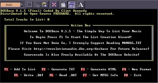
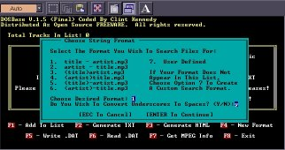

Download DOSBase V.1.5 Final! (25kb)
|  |  |
| Main Interface | Example Working Interface |
If you are serious about MP3 collecting you need this tool! DOSBase is a multifunctional list creation utility for mp3 collectors. It is a win32 console application with an easy to use interactive interface. It is intended to be used by collectors who name their mp3 files with a particular naming convention (such as title - artist.mp3 or (title)_artist.mp3. DOSBase intelligently extracts all information (titles and artists) and creates nice looking TXT files or HTML documents you can use to trade with or keep inventory (example html output , example ASCII text output). If you don't feel comfortable with it, keep using it! Chances are the features you are looking for are in this utility. This utility is definitely worth taking the time to learn!!
* ASCII Text File Creation
- User defined column order
- Ability to sort by title or artist
* HTML Document Creation
- A-Z Navigation Bar for quick hyperlinks to letters
- Ability to sort by title or artist
- Easily Addable To Your Homepage!
* Binary DATabase file creation for future reloading of lists
(This way if for example you have a list with 20+ CD-Rs,
you won't have to rescan every cd to add 1 new CD-R to your list)
* "Smart Add" (DOSBase doesn't add identical entries more
than one time)
* Recursion Of Subdirectories
- Easily scan & rescan entire harddrives for mp3s
* File Name Parsing (including user defined strings)
Also support for multiple naming conventions. Simply
rescan the specified locations with the new search
pattern and let DOSBase do the rest
* Underscore Removal
* MPEG Frame Header Decoding
* Long file-name support...So far as to not require those
nasty "" marks around paths and files. Just type away.
* 100% Open Source Distributed Under The Terms Of The GPL
(General Public License), refer to license.txt.
* Source Code Available At The Link Above
DOSBase is freeware and may be used and distributed as much as you so desire. However, no cost may be placed on DOSBase including any usage of it. I'm considering taking the existing code and putting a windows interface on it. Would anyone find this useful? I know some of you enjoy the DOS type feel of the program. Got new idears for a new project? E-mail me: DJSlakoR@hotmail.com